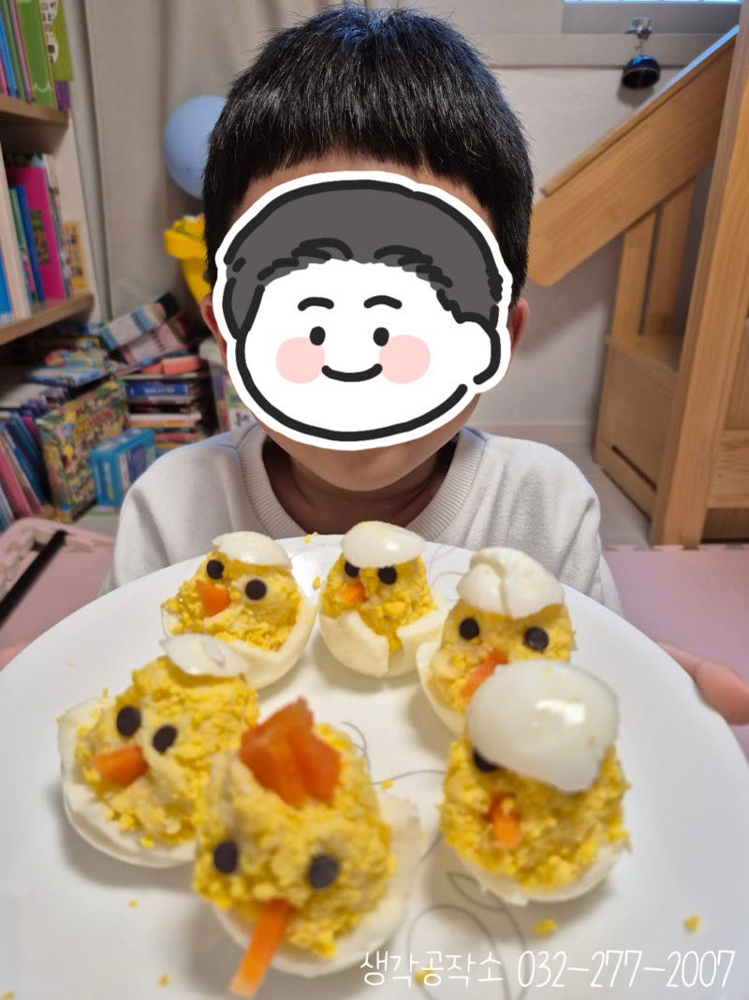
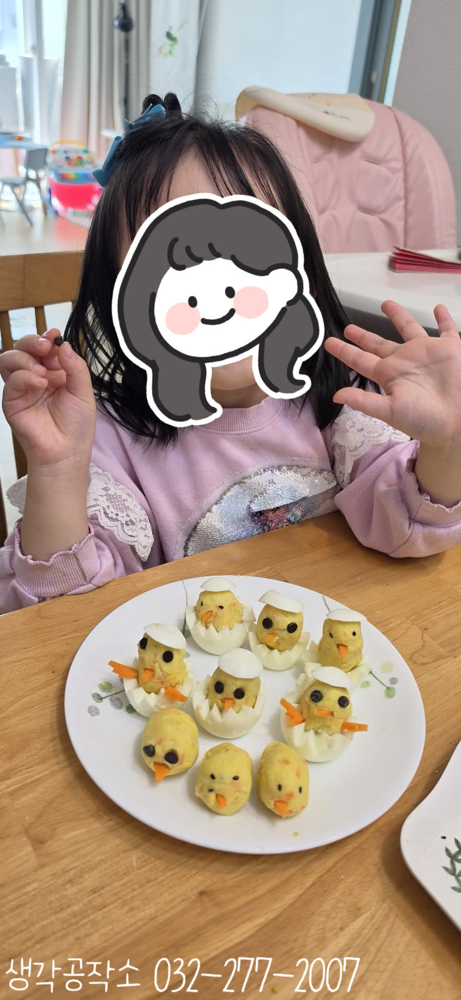
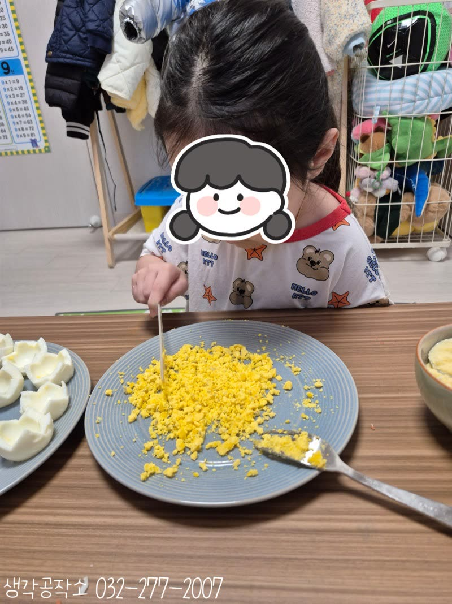
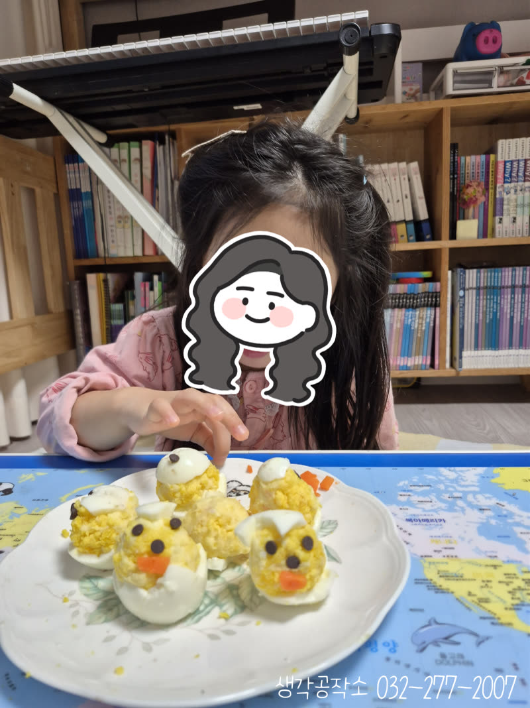
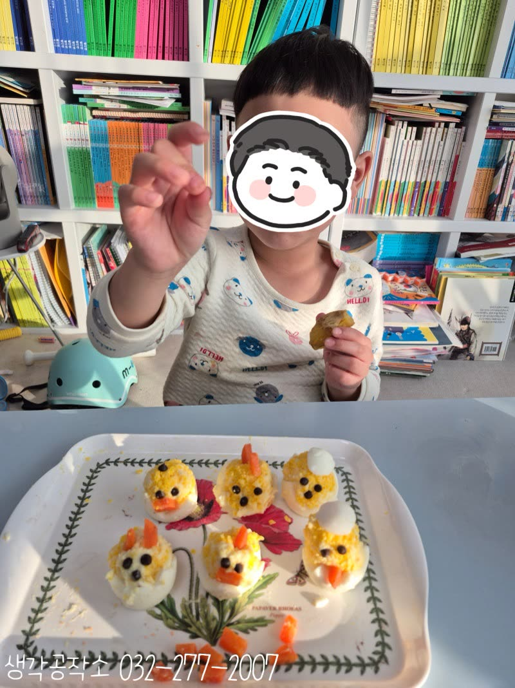
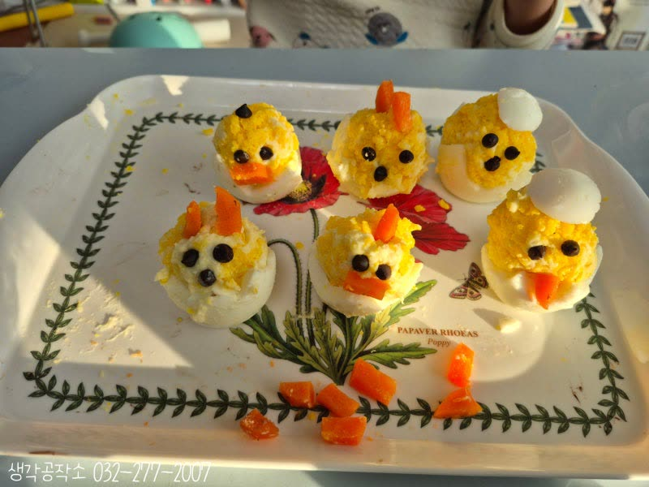
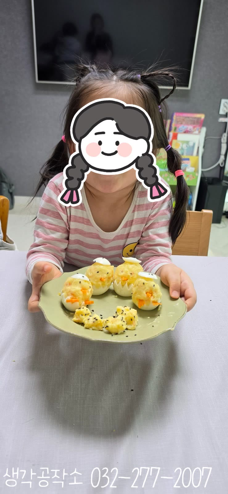

삐약삐약 봄이 왔어요! 귀여운 병아리 샐러드 만들기 🐥🥚
안녕하세요, 생각공작소입니다. :)
3월의 따뜻한 봄날, 새싹이 돋고 🌱
병아리가 태어나는 계절이 왔습니다.
"삐약삐약!"
아이들이 가장 좋아하는 봄의 친구,
귀여운 병아리를 떠올리며 🐥
특별한 요리 활동을 진행했답니다!
바로 병아리 샐러드 만들기 !
계란과 감자로 만드는 세상에서
가장 귀여운 병아리들
아이들의 손끝에서 탄생했습니다. 🥚✨


먼저 선생님이 미리 삶아온
계란과 감자를 준비했어요. !
"우와, 계란이다!" "감자도 있어요!"
아이들의 눈이 반짝였습니다.✨
"오늘은 이걸로 병아리를 만들 거야!"
"진짜요? 계란으로요?"
계란을 지그재그로 반 가르니
톱니 모양의 귀여운 껍질이 나타났어요.
"우와, 왕관 같아요!"
"병아리 껍질이다!" 🥚
계란 노른자를 꺼내 포크로 으깨기 시작했어요.


"선생님, 이렇게 으깨는 거예요?"
집중한 표정으로
노른자를 부드럽게 으깨는 아이들!
포크로 꾹꾹 눌러가며
노란 가루가 되어가는 모습을
신기하게 바라봤답니다. 🍳
동시에 감자도 으깨기!
"감자가 부드러워요!"
"으깨니까 으깬 감자 냄새 나요!"
감자에 마요네즈를 넣고
계란 크기에 맞게 동그랗게 뭉쳤어요.
"이만큼 뭉치면 돼요?"
"병아리 몸통이네요!"
뭉친 감자를 노른자 가루에
데굴데굴 굴리니 노란 병아리 몸통 완성! 🐤

이제 가장 재미있는 순간!
계란 흰자 안에 노란 감자 덩어리를 넣고,
초코로 눈을 붙이고,
당근으로 부리와 닭벼슬을 만들었어요. 🐔
"눈은 여기에 붙이면 돼요?"
"부리는 이렇게!"
"닭벼슬도 올릴 거예요!"
아이들은 하나하나 정성껏
얼굴을 만들어갔답니다. 🎨
마지막으로 잘라뒀던 흰자를
모자처럼 씌우니
완벽한 병아리 완성! 🐥✨

"선생님, 다 만들었어요!"
접시 위에 놓인 귀여운 병아리들!
"삐약삐약!"
"너무 귀여워서 못 먹겠어요!"
환하게 웃으며
자신이 만든 병아리를
자랑하는 아이들! 😊
"이제 먹어도 돼요?"
한 입 베어 무는 순간,
부드러운 감자와 고소한 계란이
입안에서 녹아내렸어요.
"맛있어요!"
"저 한 마리 더 만들 거예요!"
직접 만든 병아리는
그 어떤 음식보다 특별했답니다. 💕

이번 병아리 샐러드 만들기는
단순히 요리를 넘어,
봄의 생명을 느끼고,
재료를 으깨고 뭉치며 소근육을 발달시키고,
다양한 촉감과 향을 느끼며 오감을 자극하고,
정교하게 장식하며 집중력을 키우고,
완성된 작품을 먹으며 성취감을 느끼는
모든 순간이 아이들의 성장이었답니다. 🌱
생각공작소는
아이들이 계절을 온몸으로 느끼고,
직접 만드는 즐거움을 경험할 수 있도록
언제나 함께하겠습니다. 🙌
오감쑥쑥 서비스는 아이들의 가정에서
제공인력 선생님과 1:1로 진행하며,
아이들의 오감을 자극하고
창의력과 집중력을 자연스럽게 키우는
맞춤형 프로그램입니다.
단순히 만들기를 가르치는 것을 넘어,
아이들이 스스로 탐색하고 표현하며
성장할 수 있도록 세심하게 이끌어갑니다.
오감 쑥쑥! 생각 쑥쑥!
📞 생각공작소 032-277-2007